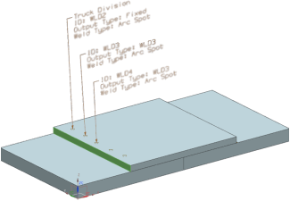

使用制造标签命令以在焊接、基准以及测量点上应用标签和注释。
您可以：
在 CAD 装配或模型中创建焊接和基准数据的高级可视化
一次对多个特征创建带信息(比如属性和参数)的标签，这些信息可以包括体积、相连的部件、ID 等等。
|
 |
标签将被保存为 PMI 标签 对象，位于部件导航器中的 PMI 节点下方，它们也被分组在部件导航器的测量标签以及焊接标签节点下方。
|
应用模块 |
建模 |
|
工具条 |
焊接助理→制造标签 BIW 定位器→制造标签 结构焊接→制造标签 |
|
菜单 |
插入→焊接助理→制造标签 插入→BIW 定位器→制造标签 插入→结构焊接→制造标签 |